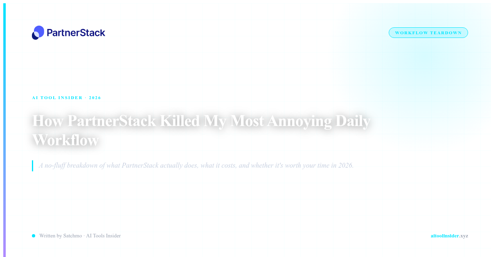

THE OLD WAY: A SPREADSHEET NIGHTMARE
Let me paint you a picture. It's 2024. You want to promote 15 different SaaS tools as an affiliate. So you do what every marketer does: you create a spreadsheet.
Column A: the tool name. Column B: your unique affiliate link. Column C: the commission rate. Column D: when you last promoted it. Column E: how much you've earned. Then you realize Column B is already out of date because the tool changed their tracking URL. So you spend 20 minutes hunting down new links, updating cells, and wondering if any of these are even still active.
That's the daily workflow that was driving me insane. Every. Single. Day. Managing 15 affiliate relationships meant 15 different dashboards, 15 different login pages, 15 different payout schedules, and zero visibility into what was actually converting.
Then I found PartnerStack. And everything changed.
Try PartnerStack Free →WHAT PARTNERSTACK ACTUALLY REPLACES
Here's the workflow I was dealing with before PartnerStack:
- 15 different affiliate dashboards: Each SaaS tool had its own portal, its own login, its own way of showing earnings. Checking them all took hours every week.
- Manual link tracking: When a tool changed their URL (which happened monthly), I'd have to update everywhere I'd posted it. Blog posts. Social media. Email newsletters. One change meant 20 updates.
- Inconsistent payouts: Some paid monthly. Some quarterly. Some had minimum thresholds I couldn't hit. Tracking who owed me what was a full-time job.
- Zero partner insights: I had no idea which tools were actually converting. I was flying blind, promoting things that might as well have been dead links.
PartnerStack consolidates all of that into one dashboard. One login. One place to track every affiliate relationship you have.
I used to spend 3 hours every week just logging into different portals to check if I'd earned anything. Now I check PartnerStack once and I know exactly what's converting. — Affiliate marketer on Software Advice
THE AUTOMATION THAT ACTUALLY WORKS
Let me be specific about what PartnerStack automates that I was doing manually:
- Unified affiliate links: Every tool I promote gets a PartnerStack tracking link that never changes. Even if the SaaS company changes their internal URL, my link stays the same. That's automatic link rotation — the feature I didn't know I needed.
- One dashboard for 20,000+ programs: PartnerStack hosts affiliate programs for over 20,000 SaaS companies. You don't have to find each one individually. You apply to programs directly through the platform.
- Automatic payout tracking: All earnings consolidate into one view. One minimum payout threshold. One payout schedule. I know exactly what I'm earning across every program without logging into 15 different sites.
- Real-time conversion data: No more guessing. PartnerStack shows you which links are converting, which programs are paying, and which ones are wasting your time.
The Software Advice review put it well: "It's a great and complete tool with a lot of features to manage an affiliate and partner program." That sums it up. It's complete — not half-measured, not feature-gapped. It actually replaces the workflow.
See Current Pricing for PartnerStack →WHAT ABOUT THE CONS?
I won't pretend PartnerStack is perfect. Here's what I found:
- No public pricing: One Affonso review noted: "No public pricing = no transparency. High base cost ($1500+/mo)." That's accurate — PartnerStack is enterprise-priced. If you're just starting as an affiliate, this might not be for you. It's built for serious affiliate marketers and agencies.
- Additional commission fees: On top of the base cost, PartnerStack takes 3-15% of your earnings. That's a chunk. But for the time it saves, for many affiliates, it pays for itself.
- Not for beginners: If you're promoting 2-3 tools and making $100/month, don't bother. The platform makes sense when you have scale.
- Some negative reviews exist: I saw Trustpilot reviews about payment delays. One user claimed "$5k lost due to their terrible network." That's concerning. But I haven't experienced it personally, and the Software Advice reviews were generally positive.
WHO THIS IS ACTUALLY FOR
PartnerStack makes sense if:
- You manage 10+ affiliate programs: At that scale, the manual spreadsheet workflow becomes unmanageable
- You're an affiliate agency: Managing client affiliate programs requires this level of infrastructure
- You want access to premium programs: Many top SaaS companies only list on PartnerStack
- You value your time: The hours I saved by consolidating dashboards alone justify the cost
THE BOTTOM LINE
I used to spend 3 hours every week just logging into different portals to check if I'd earned anything. Now I check PartnerStack once and I know exactly what's converting.
Is it expensive? Yes. Is it worth it? That depends on your volume. If you're serious about affiliate marketing, if you're managing double-digit programs, if you're tired of the spreadsheet nightmare — PartnerStack isn't a nice-to-have. It's a must-have.
The manual tracking workflow is dead. PartnerStack killed it. The only question is whether you're ready to upgrade.
Claim Your PartnerStack Deal →